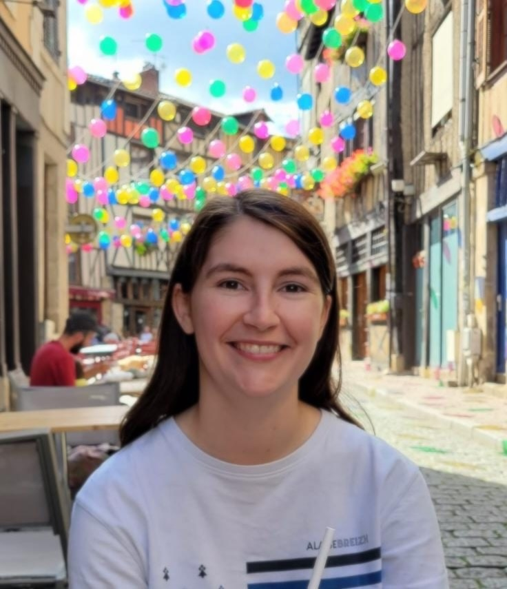

I work at xlim (UMR CNRS 7252), under the supervision
of Olivier Ruatta and Ilaria Zappatore, since
October
2024.
The subject of my PhD is "Locally decodable codes in
rank metric and sum-rank metric and applications to cryptography".
I studied mathematics at the University of Rennes from 2018
to
2023. I obtained the agregation in 2022.
You can find on this website informations about my studies, my work experiences and my research work.